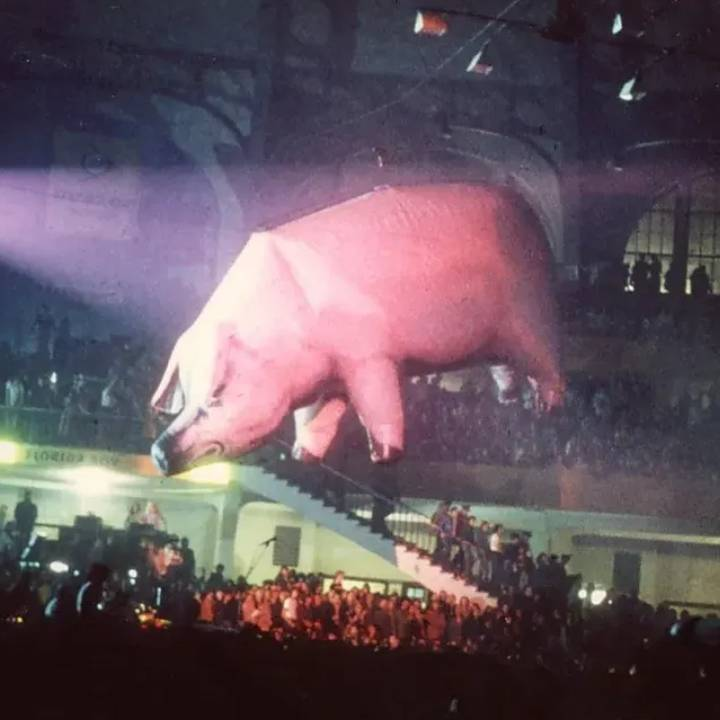

Animals
Wydany: 23 stycznia 1977 | Wytwórnia: Harvest Records
O albumie
"Animals" to dziesiąty album studyjny Pink Floyd, będący mroczną i gniewną krytyką społeczeństwa kapitalistycznego i systemu klasowego. Album jest luźno oparty na powieści George'a Orwella "Folwark zwierzęcy" i dzieli ludzi na trzy kategorie zwierząt: psy (bezwzględni biznesmeni i politycy), świnie (skorumpowani przywódcy) i owce (bierne masy).
To jeden z najbardziej politycznych i gniewnych albumów Pink Floyd. Roger Waters, główny autor tekstów, wyraził swoją frustrację wobec kapitalizmu, konsumpcjonizmu i moralnego upadku społeczeństwa brytyjskiego lat 70. Album powstał w okresie kryzysu ekonomicznego w Wielkiej Brytanii, strajków i rosnących napięć społecznych, co głęboko wpłynęło na jego ton.
Muzycznie "Animals" to powrót do długich, progresywnych kompozycji po bardziej dostępnym "Wish You Were Here". Album składa się tylko z pięciu utworów, z których trzy to epickiej długości suity przekraczające 10 minut. Muzyka jest ciężka, agresywna i pełna napięcia, z ostrymi gitarami, gęstymi syntezatorami i złowieszczymi tekstami Watersa.
Ikoniczne okładki i grafiki

Oryginalna okładka albumu
Zaprojektowana przez Hipgnosis, okładka przedstawia elektrownię Battersea Power Station w Londynie z gigantyczną nadmuchiwaną świnią unoszącą się między kominami. Elektrownia, będąca symbolem industrializacji i władzy korporacyjnej, doskonale pasuje do tematyki albumu. Zdjęcia wykonała ekipa Hipgnosis (m.in. Aubrey „Po" Powell i współpracownicy).

Algie - latająca świnia
Nadmuchiwana świnia o nazwie "Algie" stała się ikoną Pink Floyd. Podczas sesji zdjęciowej świnia zerwała się z lin i poleciała nad Londynem, powodując problemy lotnicze. Świnia wylądowała na farmie w Kent, przerażając miejscowych rolników. Incydent ten stał się legendą rocka.
Lista utworów
| Nr. | Tytuł | Długość | Opis i znaczenie |
|---|---|---|---|
| 1. | Pigs on the Wing (Part 1) | 1:25 | Akustyczne intro - Waters wyraża nadzieję na ludzkie połączenie w okrutnym świecie |
| 2. | Dogs | 17:06 | Epicki utwór o bezwzględnych biznesmenach, którzy poświęcają wszystko dla sukcesu, by ostatecznie umrzeć samotnie. Zawiera jedne z najbardziej agresywnych gitar Gilmoura i zjadliwych tekstów Watersa. |
| 3. | Pigs (Three Different Ones) | 11:28 | Atak na skorumpowanych polityków i przywódców. Waters wymienia trzy typy "świń": wielki człowiek (big man), dobrze wychowaną (well heeled), i Mary Whitehouse (konserwatywna aktywistka). Zawiera słynne solo Gilmoura na talkbox. |
| 4. | Sheep | 10:19 | O biernych masach, które pozwalają się prowadzić jak owce na rzeź. Utwór kończy się rewolucją owiec przeciwko psom. Zawiera przerobioną wersję Psalmu 23 ("The Lord is my shepherd") na mroczną satyrę. |
| 5. | Pigs on the Wing (Part 2) | 1:23 | Akustyczne zakończenie - Waters kontynuuje temat ludzkiego połączenia jako ucieczki od okrucieństwa świata zwierząt |
Całkowity czas trwania: 41:41
Osiągnięcia i wyróżnienia
Sprzedaż
Ponad 12 milionów sprzedanych kopii na całym świecie
Billboard 200
Miejsce #3 w USA, pozostał na liście przez 37 tygodni
UK Albums Chart
Miejsce #2 w Wielkiej Brytanii
Certyfikaty USA
4× Platyna (RIAA)
Oceny krytyków
Początkowo mieszane, z czasem uznany za arcydzieło
Reedycja 2018
Zremasterowana wersja z nowym miksem Guthrie'a osiągnęła wysokie pozycje na listach
Kontekst historyczny i społeczny
"Animals" powstał w trudnym okresie dla Wielkiej Brytanii. Lata 70. to czas kryzysu ekonomicznego, wysokiego bezrobocia, inflacji i strajków. "Zima niezadowolenia" (Winter of Discontent) 1978-79 była tuż za rogiem. Społeczeństwo było podzielone, a przepaść między klasami rosła.
Roger Waters obserwował te zjawiska z rosnącą frustracją. Jako członek megapopularnego zespołu rockowego, sam był częścią systemu, który krytykował. Ta wewnętrzna sprzeczność dodawała goryczy jego tekstom. Waters widział, jak przemysł muzyczny przekształcił się w bezwzględną machinę do zarabiania pieniędzy, gdzie artyści byli traktowani jak towary.
Album był również reakcją na rosnący konsumpcjonizm i materializm. Waters atakował "American Dream" i ideę, że sukces materialny jest miarą wartości człowieka. "Dogs" opisuje ludzi, którzy poświęcają swoją duszę dla kariery, tylko po to, by umrzeć samotnie i nieszczęśliwi. To był osobisty i gniewny album, który alienował niektórych fanów, ale rezonował z tymi, którzy czuli podobną frustrację.
Analiza kluczowych utworów
Dogs
Najdłuższy utwór na albumie (17 minut) i jego emocjonalne centrum. "Dogs" opisuje bezwzględnych biznesmenów, którzy wspinają się po szczeblach kariery, tratując innych.
Utwór zawiera jedne z najbardziej agresywnych i technicznych gitar Davida Gilmoura w historii Pink Floyd. Jego solo są ostre, złowieszcze i pełne napięcia. Rick Wright dodał gęste warstwy syntezatorów, tworząc klaustrofobiczną atmosferę.
Utwór pierwotnie nosił tytuł "You Gotta Be Crazy" i był grany na żywo już w 1974 roku, na długo przed nagraniem albumu. Gilmour i Waters współpracowali nad muzyką, ale teksty są w pełni dziełem Watersa.
Pigs (Three Different Ones)
"Pigs" to bezpośredni atak na skorumpowanych polityków i przywódców. Waters wymienia trzy typy "świń": wielki człowiek, który myśli, że jest bogiem; dobrze wychowaną świnię, która udaje przyzwoitość; i Mary Whitehouse, konserwatywną aktywistkę.
Utwór zawiera słynne solo Gilmoura na gitarze z efektem talkbox, które brzmi jak świński kwik. To było celowe — Gilmour chciał, aby gitara brzmiała jak zwierzę, którego opisuje utwór.
Mary Whitehouse rozważała pozwanie zespołu za zniesławienie, ale ostatecznie tego nie zrobiła. Waters później powiedział, że żałuje bezpośredniego ataku na konkretną osobę, ale nie żałuje ogólnego przesłania utworu o hipokryzji władzy.
Sheep
"Sheep" opisuje bierne masy, które pozwalają się prowadzić przez "psy" i "świnie". Ale w przeciwieństwie do powieści Orwella, owce w końcu się buntują.
Najbardziej kontrowersyjną częścią utworu jest przerobiona wersja Psalmu 23. Waters zmienił "The Lord is my shepherd" na mroczną satyrę. To było postrzegane jako bluźnierstwo przez niektórych słuchaczy.
Utwór kończy się rewolucją — owce zabijają psy. Ale Waters nie przedstawia tego jako szczęśliwe zakończenie. Implikacja jest taka, że owce staną się nowymi psami, kontynuując cykl przemocy i opresji. To pesymistyczna wizja ludzkiej natury.
Produkcja i nagrywanie
"Animals" był nagrywany w nowym studiu zespołu, Britannia Row Studios w Londynie, które Pink Floyd zakupił w 1976 roku. To był pierwszy album nagrany w pełni w ich własnym studiu, co dało im pełną kontrolę twórczą i technologiczną.
Zespół użył 24-ścieżkowej taśmy, co było znacznym ulepszeniem w porównaniu do 16-ścieżkowej używanej przy "Dark Side of the Moon". To pozwoliło na bardziej złożone warstwy dźwiękowe i eksperymenty. Brian Humphries był głównym inżynierem dźwięku, a zespół sam wyprodukował album.
Sesje nagraniowe były napięte. Roger Waters coraz bardziej dominował w procesie twórczym, co frustrowało Davida Gilmoura i Ricka Wrighta. Nick Mason później wspominał, że atmosfera w studiu była "chłodna" i że zespół zaczynał się rozpadać emocjonalnie.
Sesja zdjęciowa i incydent ze świnią
Sesja zdjęciowa do okładki "Animals" stała się legendą rocka. Zespół wynajął gigantyczną nadmuchiwaną świnię o nazwie "Algie" (30 stóp długości) i umieścił ją między kominami elektrowni Battersea. Sesja była zaplanowana na 2 grudnia 1976 roku.
Pierwszego dnia pogoda była idealna, ale zespół zapomniał wynająć strzelca wyborowego, który miałby zestrzelić świnię w razie, gdyby zerwała się z lin. Drugiego dnia wynajęli strzelca, ale pogoda była kiepska. Trzeciego dnia pogoda była znowu dobra, ale strzelec nie przyszedł. I wtedy to się stało.
Świnia zerwała się z lin i poleciała nad Londynem. Świnia ostatecznie wylądowała na farmie w Kent, 50 mil od Londynu, przerażając miejscowego rolnika. Incydent trafił na pierwsze strony gazet.
Ciekawostki
- Elektrownia Battersea została zamknięta w 1983 roku i od tego czasu jest przedmiotem różnych planów renowacji
- "Dogs" był pierwotnie napisany w 1974 roku jako "You Gotta Be Crazy" i grany na żywo przed nagraniem albumu
- "Sheep" również istniał wcześniej jako "Raving and Drooling"
- W wersji 8-track "Pigs on the Wing" był połączony w jeden utwór z gitarowym solo Snowy'ego White'a
- Album nie zawiera żadnych singli - był zbyt progresywny i długi dla radia komercyjnego
- Roger Waters użył efektu vocoder w "Sheep", co było nowością dla Pink Floyd
- Okładka nie zawiera żadnego tekstu na przedniej stronie - tylko elektrownia i świnia
- W 2018 roku ukazała się zremasterowana wersja z nowym miksem 5.1 surround sound
- Nadmuchiwana świnia "Algie" była używana podczas tras koncertowych i stała się stałym elementem show Pink Floyd
Odbiór krytyczny i ewolucja reputacji
Kiedy "Animals" został wydany w 1977 roku, recenzje były mieszane. Niektórzy krytycy chwalili jego muzyczną wirtuozerię i odwagę polityczną, ale inni uważali go za zbyt mroczny, pesymistyczny i pretensjonalny. Rolling Stone napisał, że album jest "zbyt długi i zbyt ponury".
Pomimo mieszanych recenzji, album był komercyjnym sukcesem, osiągając wysokie pozycje na listach przebojów na całym świecie. Fani docenili powrót do długich, progresywnych kompozycji po bardziej dostępnym "Wish You Were Here".
Z biegiem lat reputacja "Animals" rosła. Dzisiaj jest uważany za jeden z najlepszych albumów Pink Floyd i arcydzieło rocka progresywnego. Jego polityczne przesłanie okazało się ponadczasowe — krytyka kapitalizmu, konsumpcjonizmu i systemu klasowego jest równie aktualna dzisiaj jak w 1977 roku.
Wielu muzyków i krytyków uważa "Animals" za najbardziej niedoceniony album Pink Floyd. Jest mniej znany niż "Dark Side of the Moon" czy "The Wall", ale dla wielu fanów to szczyt twórczości zespołu.
Wpływ kulturowy i dziedzictwo
"Animals" wpłynął na całe pokolenie zespołów rockowych i metalowych. Jego ciężkie, agresywne brzmienie i polityczne teksty zainspirowały punk rock, który eksplodował w tym samym roku. Sex Pistols, The Clash i inne zespoły punkowe dzieliły gniew Watersa wobec systemu, choć wyrażały go w bardziej surowej formie.
Album również wpłynął na rozwój metalu progresywnego w latach 80. i 90. Zespoły takie jak Tool, Dream Theater i Porcupine Tree cytowały "Animals" jako inspirację. Długie, złożone kompozycje i mroczna tematyka stały się cechami charakterystycznymi gatunku.
Latająca świnia stała się ikoną Pink Floyd, pojawiając się na koncertach, okładkach i w popkulturze. Jest symbolem buntu przeciwko władzy i korporacjom. Do dziś fani przynoszą nadmuchiwane świnie na koncerty Rogera Watersa.
"Animals" przypomina nam, że muzyka rockowa może być narzędziem krytyki społecznej i politycznej. W czasach, gdy wiele muzyki jest eskapistyczna i komercyjna, "Animals" stoi jako testament do mocy sztuki, która konfrontuje niewygodne prawdy o społeczeństwie i ludzkiej naturze.